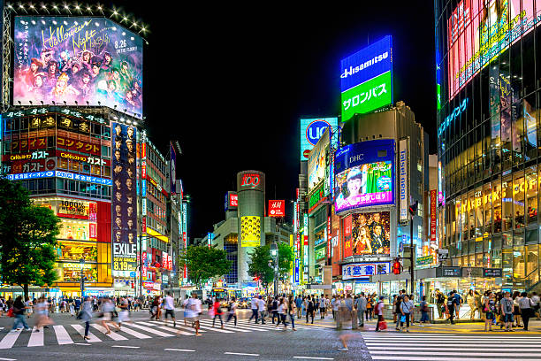
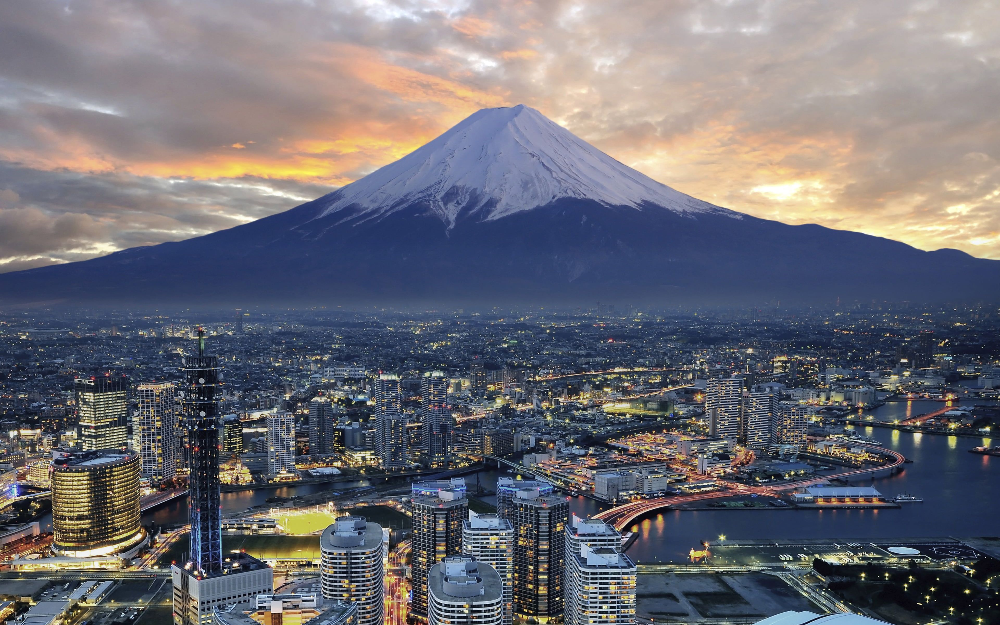

Kyoto is the heart of traditional Japan, filled with ancient temples, peaceful gardens, and historic streets. It offers a quiet escape into Japan’s cultural past.
Tokyo is a vibrant metropolis known for neon lights, modern technology, and incredible food. From Shibuya Crossing to hidden ramen shops, the city never slows down.


Japan’s most iconic landmark, Mount Fuji is known for its perfect shape and breathtaking views. It’s a symbol of beauty and serenity.